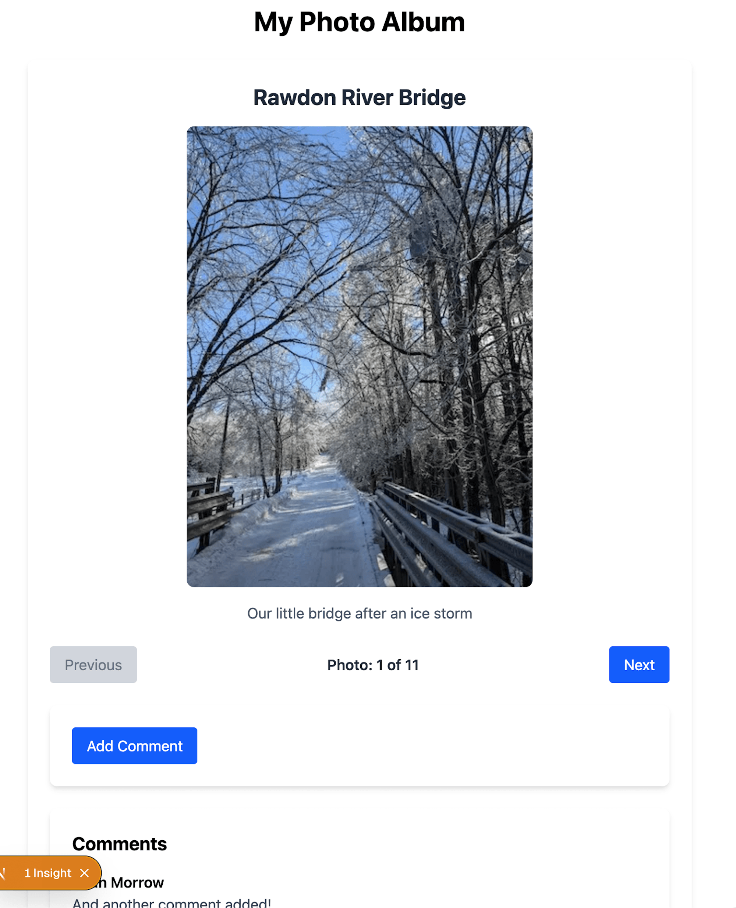
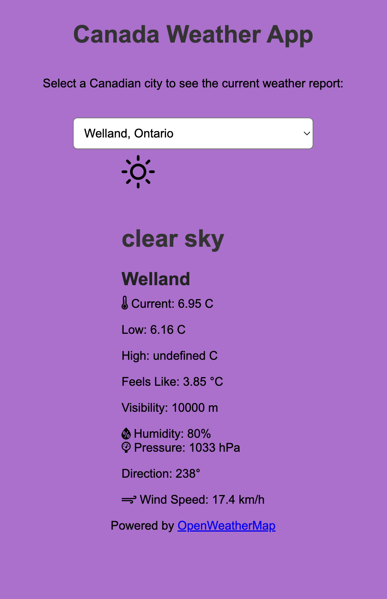
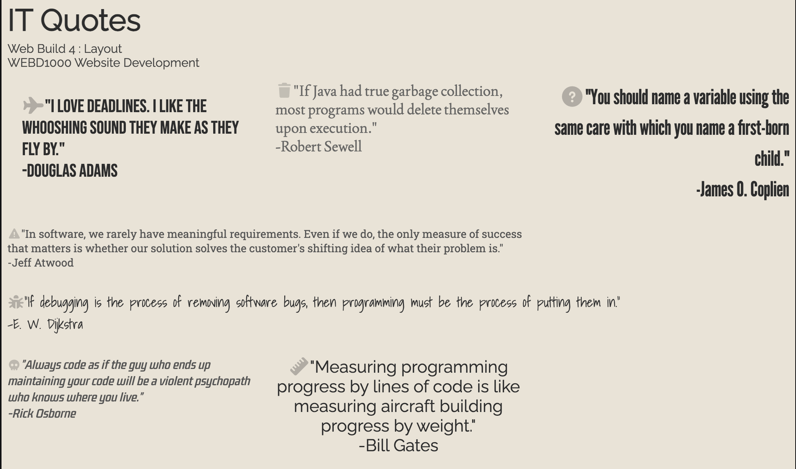

Photo Album Application
Recommended
- Next.js and React
- TypeScript and component-based development
- Photo navigation, keyboard controls, comments, and jump navigation
- Demonstrates interactive application development.



Developed a weather application that retrieves live weather information for Canadian cities using the OpenWeatherMap API. The application displays current weather conditions and remembers the user's selected city between visits.

Created a quotes application using HTML and CSS. The project demonstrates my ability to structure web content, apply styling, and create a clean, readable user interface.